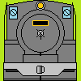
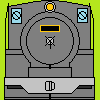

特急第二つばめのウェブサイト
プロフィール

好きな作品
- きかんしゃトーマス
- 東方project(原作、二次創作ともに)
今していること
Railsim2 鉄道シミュレーターです。将来的にはアドオンの公開を行っていきたいと思っています。
Simutrans 交通シミュレーションゲームです。
鉄道模型 初代神戸停車場の完全再現を目標に頑張っています。
プラレール 様々な鉄道風景を再現して楽しんでいます。
小説 鉄道が主役の小説を書いています。

好きな作品
今していること
Railsim2 鉄道シミュレーターです。将来的にはアドオンの公開を行っていきたいと思っています。
Simutrans 交通シミュレーションゲームです。
鉄道模型 初代神戸停車場の完全再現を目標に頑張っています。
プラレール 様々な鉄道風景を再現して楽しんでいます。
小説 鉄道が主役の小説を書いています。